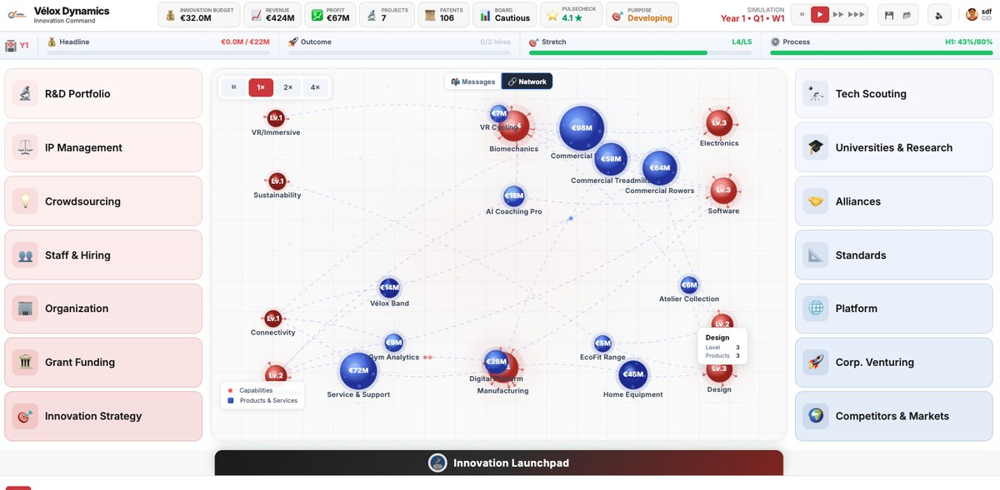
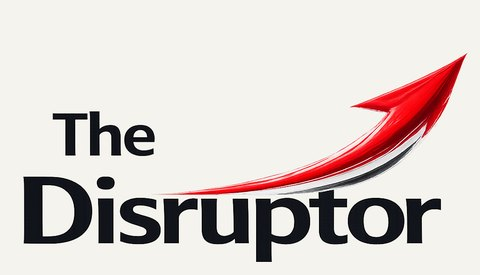
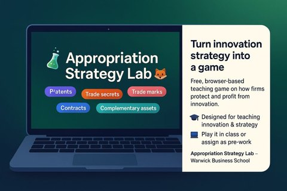
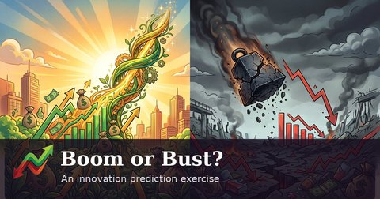
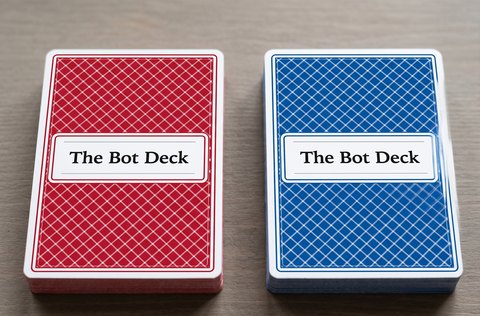
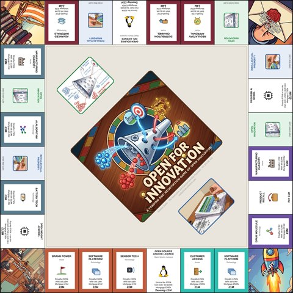
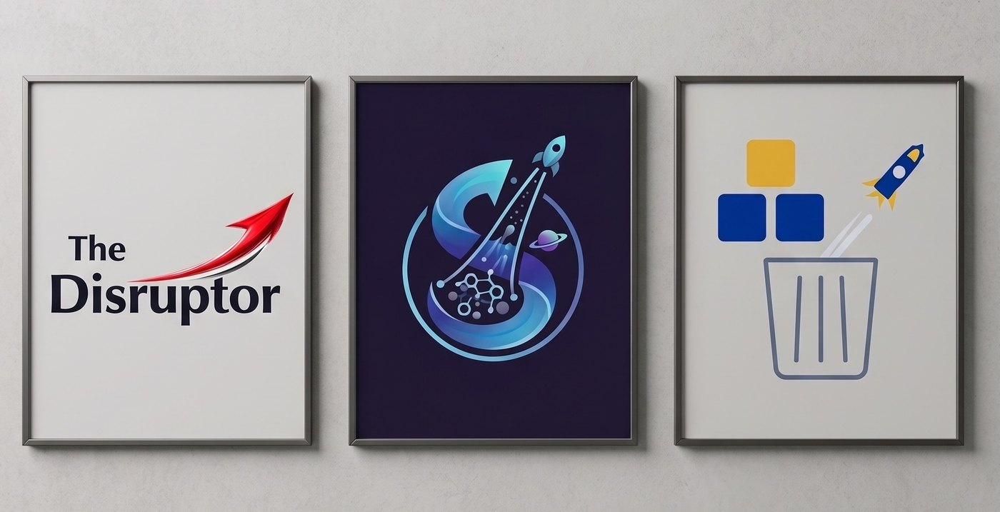

I have developed a family of free, open-source educational games and simulations for students and lifelong learners in entrepreneurship and innovation. They are designed for deep play, allowing students to explore a rich possibility space and experiment with options, and to be played many times, as they are challenging, with moments of fun and levity mixed in.
All the games are designed as community projects, as my intention was to ‘free the sims’. I have been using generative AI tools to build and maintain these tools.
Since launch, they have been accessed by over 4,000 people from 86 countries, including educators at 50 universities. You are welcome to join the fun.
The DisruptorInnovation and corporate entrepreneurshipApr 2026
Each line opens the game’s site. Each game is a single file that runs in the browser: no server, no account, no database, and no language model inside it. Everything is released under CC BY-NC-SA 4.0.


The Disruptor: An Innovation Management and Corporate Entrepreneurship Simulation
You arrive at Vélox Dynamics, a Belgian fitness-equipment company trying to reinvent itself, as its new Chief Innovation Officer. Over three years events arrive week by week and the board appraises you each year: what to fund and what to kill, when to explore and when to exploit, how to build a pipeline while protecting the intellectual property. Five modes, from Forge through Pivot and Jugaad to the Gauntlet, give different ways in. The end-of-game report, mapped to ISO 56001, scores innovation maturity and grades your legacy, and Katrien De Wolf, the chief executive, talks it through with the student.
Found an AI venture in the UK, choose your background and your milestones, raise money, hire a leadership team, pick your markets and race rivals through sixteen quarters. Built out of the ESRC project on AI new ventures. Two companions, built as Claude artifacts: Ada, who helps a student build a venture before play, and Schumpeter, who debriefs the run afterwards.
You are Head of R&D at ShieldTech India, a fast-growing home-security technology company, with two years, eight quarters and a substantial budget. You choose how projects get selected, then decide at each quarterly review what to continue, accelerate, reduce or kill, against more than sixty management dilemmas and a mid-term review that adds funding for the second year. At the end the board weighs hit rate, return, market share, risk balance, strategic alignment and management discipline, judging the quality of the decisions rather than the luck, and the run can be downloaded as a case study of your tenure.
Each simulation is supported by a wide range of materials to help educators use it: a free educator’s pack with case studies, teaching guides and notes, assessment examples and AI-aware assessment tools, onboarding and walkthrough videos, a website, and AI assistants for players and educators. Please email me at ammon.salter@wbs.ac.uk with your university and course for access.
Smaller games and tools

Appropriation Strategy Lab. A tool for assessing appropriation strategy, built around thirty industry cases. Play it.

Boom or Bust. On the difficulty of predicting innovation success, drawing on thirty-five cases. Play it.

The Bot Deck. A set of cards exploring the challenges and opportunities of generative AI use. Files on Google Drive.

Open for Innovation: the board game. A trading and negotiation game of open innovation, appropriability and intellectual property, played on a printed board with property cards, two event decks and banknotes; four or five players, 45 to 60 minutes. Free to print and play under CC BY-NC 4.0. Files on Google Drive.
How they are made
These simulations and games were developed with AI tools, with Claude models such as Fable, Opus and Sonnet (code, visual images, content, debug), Gemini (visual images, content, debug), GPT/Codex (code, mini-games, content, and images). I designed, dictated, and reviewed all the game content and educator pack material. I carefully playtested every build. The models wrote the code to my instructions. No studio or programmer was involved. Each game is a single HTML file with no server, no accounts and no fees, hosted for nothing on GitHub. Nothing in the games themselves is generated while you play: every event, character and line of text was written in advance and checked and approved by me, so players only ever meet material that has been reviewed.
However, nothing is perfect or bug free, and these games are not commercial products. If you see something amiss, such as a bug or a feature that does not work, please report it on the GitHub repository. Accessibility work is ongoing, and only The Slingshot has been approved to WCAG 2.2 AA.
The companions that sit alongside the games, Ada and Schumpeter for The Slingshot and Katrien De Wolf, the chief executive, for The Disruptor, are different. They run on Claude, on the player’s own account, and were written to keep them from drifting; even so, a language model can make mistakes and say things that are wrong or inappropriate.
Although I have used AI to create these tools, human attention is still required throughout the process: to design the systems, to ensure the quality of content, to judge the playing experience, and to inject some humour, joy and personality.
The Slingshot came out of the ESRC-funded project Profiting from Science, on which Stefano Baruffaldi (Politecnico di Milano) is co-investigator and Federico Bignone (Warwick Business School) is research fellow. Federico Bignone shaped the game’s mechanics and systems and playtested every version. Cite it as Salter, Baruffaldi and Bignone (2026).
Data and privacy
The games use trackers and optional cookies to gauge use and uptake. No personal information is recorded, and only aggregate information is captured. The games are free to use, with no adverts, registration or sign-up required.
The Slingshot has an optional competitive play feature that relies on a Supabase database. Students are encouraged to use nicknames, not their real names. Educators can create class tournaments. This information is used only to enable competitive play and to develop aggregate statistics on play, such as the average length of a session, across the game. The game chatbots, Ada, Schumpeter and Katrien, are based on a Claude artifact and require a Claude account. They are designed to be used on a free account. All of these features are optional. The code, security policy, data protection rules and other aspects for all the games are explained on the GitHub repositories.

The Innovation and Entrepreneurship Playbook
Follow the development and use of the games on Substack: updates, features, extensions, teaching ideas and user stories from the games, for educators and anyone curious. Free.